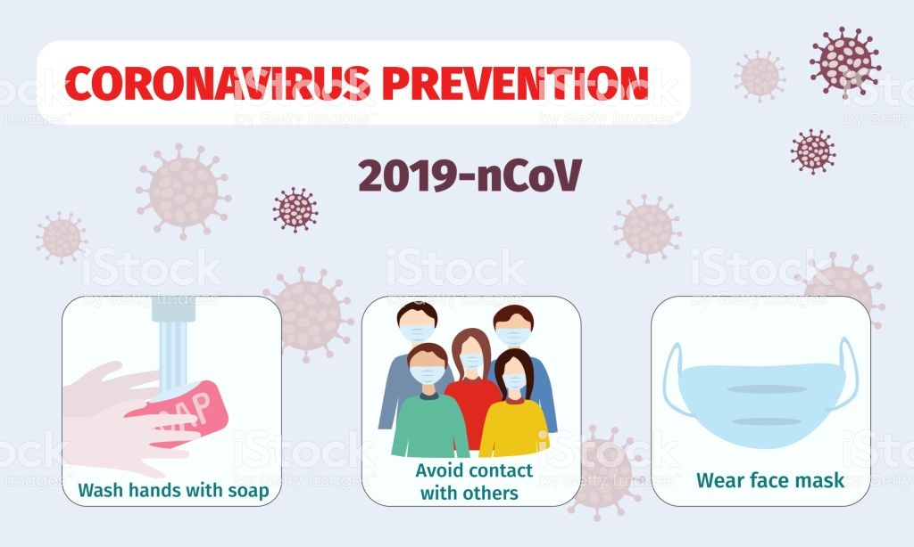

And stay upto-date with us.
1. Wash your hands the right way: Forget your regular hand washing routine for some time now. As recommended by the Centers for Disease Control & Prevention, wash your hands thoroughly for 20 long seconds with soap or liquid hand wash multiple times a day, specially if you’ve crossed your house border and come back home. Use an alcohol based sanitizer with at least 60% alcohol frequently to disinfect your hands.
2.Boost your immune system: Precaution is better than cure they say. This is the time when a strong immunity system would really help you keep safe. Eat fresh produce; take essential vitamins & minerals like Vitamin B12 with Methylcobalamin, Vitamin D3, Vitamin C, and Magnesium. Consume immunity boosting drinks containing turmeric, ginger, and lemon to up your immunity. Another way of strengthening immunity is through exercise. Spend some time in the day to workout indoors.
3.Disinfect your belongings: A recent study found that the virus that causes COVID-19 could stay in the air and surfaces for certain hours to several days. According to the study, it stays on copper for up to 4 hours, on cardboard for up to 24 hours, and on plastic and steel for up to 72 hours. Hence, it is advisable to disinfect all the frequently used surfaces like laptops, computers, phones, door handles, TV remotes, switches, counters, etc.
4.Use a tissue while coughing or sneezing: Use a tissue every time you cough or sneeze. Coughing or sneezing is not a common symptom of COVID-19. But the main mode of transmission is through respiratory droplets and surface touch. Hence, it’s essential to cover your mouth and nose with a tissue or use your elbow while coughing & sneezing.
5. Refrain from touching your eyes, Nose and mouth: COVID-19 is a respiratory illness that is spread human to human through touch, inhaling the air that might contain respiratory droplets of an infected person or surface touch. The virus is known to penetrate to your respiratory tract through your face. Even if you do not go outside and come in contact with an infected person, chances are you may have come in contact with an infected surface or air. Hence, it’s best to avoid any kind of infection by not touching your face at all.